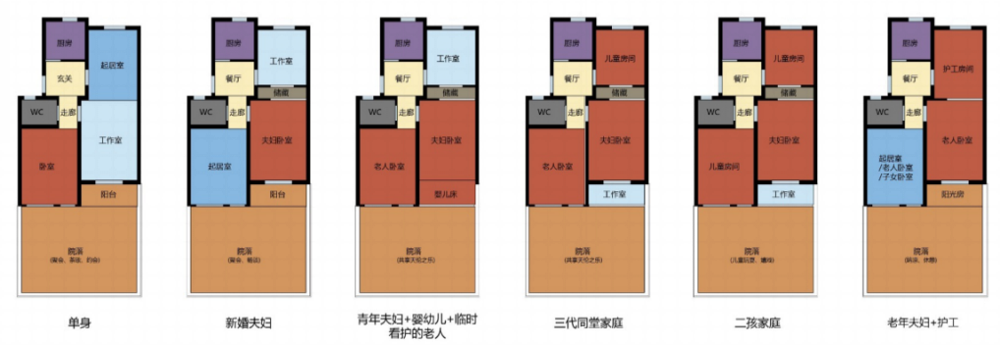
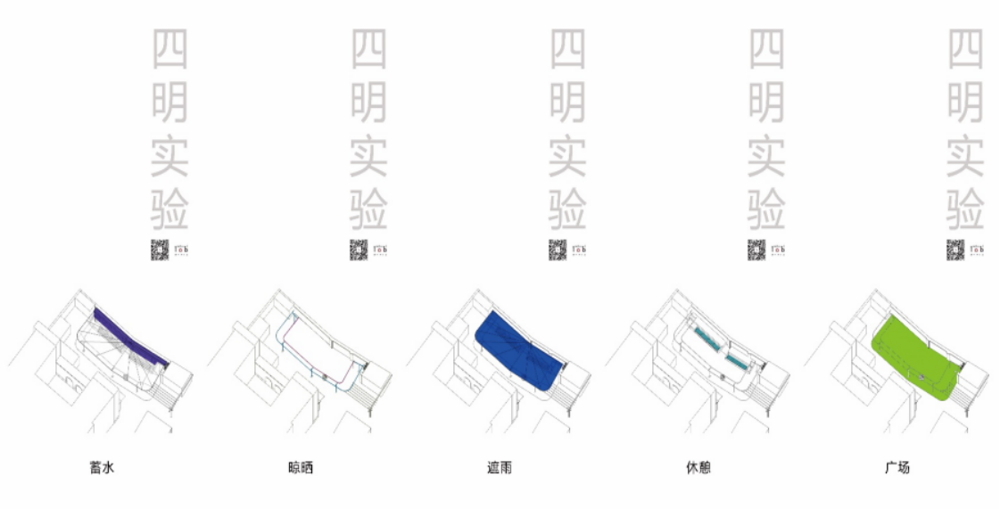

四明体育弄原本是位于静安区的一处团块畸零空间，四明社区日常生活没有活力，缺乏公共空间和服务设施，被列在静安区街道待改造的畸零空间名单之中。静安区在空间规划相关政策文件中提出静安区要“打造高能级文化服务设施”，基于此政策导向，普方实验室在“城市360”平台上成功对接此案例，根据相关要求对团块畸零空间进行了量体裁衣的设计改造。改造之后的四明体育弄，顶棚兼具蓄水、防晒、遮雨等功能，下面的舒适空间可供居民休息、锻炼，营造了良好的社区环境。
2018年6月，团队与与街道达成后期管理意向。四明体育弄真正的问题不在于标牌，而在于社区日常生活没有活力，缺乏公共空间和服务设施。依托“城市360”平台，设计团队主动向居委会提出，除了标识系统改造，再为社区做个公共空间改造设计，希望以此重新激发社区的活力。
